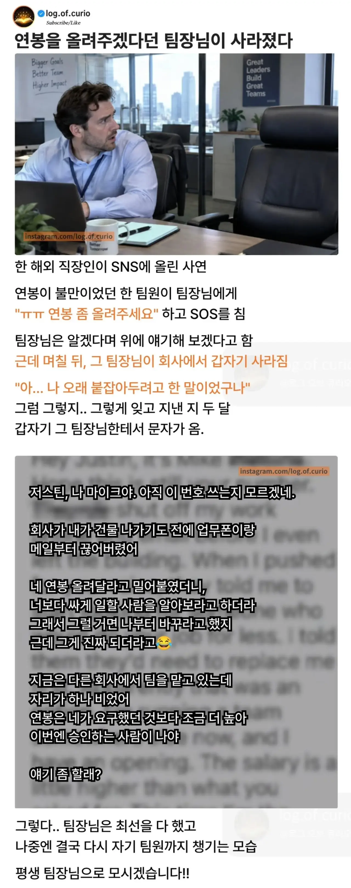

https://www.fmkorea.com/best/10544814549

https://www.fmkorea.com/best/10544814549

쟤넨 저게 그렇게 특이케이스가 아님. 사실상 cic가 표준 모델이라서.
저 상황에 중요한 부분은 팀장이 예산권이 있느냐 아니냐인데 쫓겨난 다음 이직한 곳에선 그게 있나보네. 쫓아갈지 말지는 인상된 연봉이 지금 현직장에 머무를 메리트보다 높다면 가면 됨
cic가뭔데....
양놈들, 특히 미국놈들은 일종의 점조직 형태의 매트릭스 구조로 각 팀들이 회사안의 하나의 조그만 회사처럼 움직임(Company in Company)
이게 뭘 의미하냐면 그 팀의 수장이 인사권과 예산권을 행사한다는 말임. 즉 누구한테 얼마를 왜 주는가를 기준으로 팀을 운영하는거야. (거기에 팀을 운영하기 위한 다른 예산들, 예를 들면 공용장비 등 까지 포함한 운영권을 가짐)
그게 이런저런 규모로 크고 작게 쭉~~ 있고 각 팀장 그 위 그 위 그 위 조직장들은 각각의 하이어라키가 같은 규모의 조직장들끼리 피어그룹을 만들고 서로 협의, 합의, 협업 혹은 경쟁하면서 더 큰 규모의 일이 굴러가게됨
즉 저 팀장은 기존 회사에서는 팀원들 샐러리를 결정할 권한이 없고 피플 매니징만하는 사람이었다는거. 이직하고는 예산권도 얻은거지.
가스라이팅은 ㅋㅋㅋ 선능력 개선 후 연협이 아닌곳이
어디있더냐 ㅋㅋㅋ
팀장이 존나 능력자네
저스틴도 좋은 사람이였나보다
저스틴, 우선은 캄보디아를 경유해서 영국으로와줘
일단 프놈펜 공항에서 내리면 회색 밴이 숙소로 데려다줄거야


AI 컨텐츠 같은데.. 뭔가 이제 이런 썰 피로하다 ㅋㅋㅋ
그럼 그냥 웃고 넘겨.
저게 진실인지 거짓인지 판단하는게 정말 중요한건 아니잖아
피곤하면 안피곤해하면 돼
ai썰맞을거임 파딱특유의 주작ai slop썰
걍 보고 "파딱에미뒤진년 니에미"만 마음속으로 읊고 넘기면됨
형님!
나도 이전 팀장이 몇년동안 적게 받는다고 많이 챙겨줌
근데 저런 팀장있으면 계속 따라댕겨야지 ㅋㅋㅋ
충성충성
팀장님 평생 모시겠습니다
속는 사람 없제
업계따라 우리나라에서도 흔함
게임업계가 저럼
면담해서 우르르 데리고 나가잖어 ㅋㅋㅋ
저 정도면 엉덩이 대줄수있다 .....
혼모노 팀장이다
드라마에나 나올법한 팀장이네
보통의 팀장은 지금 너는 돈이 중요한게 아니라 실력을 기르는게 우선이다 내가 니 나이때는 하면서 가스라이팅 하는 게 정석임